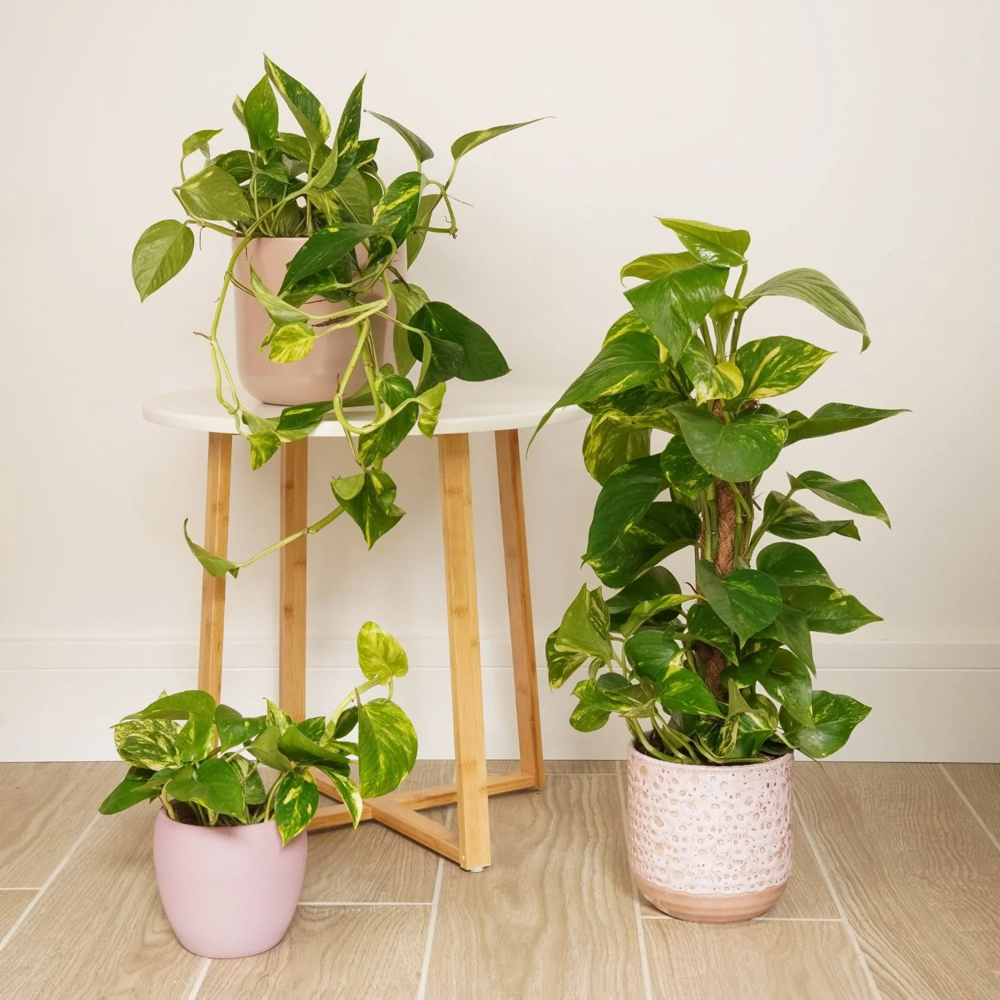

Pokojové rostliny
Proč jsou zařazeny zde?
Nahosemenné a krytosemenné rostliny se často využívají jako pokojové rostliny díky své odolnosti a estetickému vzhledu. Nahosemenné rostliny, například malé jehličnany nebo cykasy, mají pevné dřevnaté stonky a jehlicovité listy, které vydrží suché prostředí bytů. Krytosemenné rostliny, například filodendrony nebo fikusy, mají široké zelené listy a květy, díky čemuž krásně ozvláštní interiér. Obě skupiny se rozmnožují semínky, ale krytosemenné rostliny mají semena v plodech, zatímco u nahosemenných jsou semena „nahá“. Některé pokojové rostliny se dají rozmnožovat i vegetativně, například řízky nebo oddenky. Nahosemenné a krytosemenné rostliny zlepšují kvalitu vzduchu a vlhkost v místnosti. Díky svému vzhledu a snadné péči jsou oblíbené mezi lidmi, kteří chtějí mít doma živou zeleň.
Jak se o ně starat?
O pokojové rostliny je potřeba pečovat pravidelně, aby dobře rostly a zůstaly zdravé. Většina rostlin potřebuje dostatek světla, ale ne přímé slunce, které by mohlo spálit listy. Je důležité pravidelně zalévat, přičemž množství vody závisí na druhu rostliny a vlhkosti vzduchu. Některé druhy, například tropické liány, ocení vlhký vzduch nebo rosení listů. Rostliny je vhodné občas přihnojit, aby měly dostatek živin pro růst a květ. Je také dobré odstraňovat suché nebo poškozené listy, aby rostlina zůstala vitální. Pravidelná kontrola na škůdce a choroby pomáhá předcházet problémům a udržuje pokojové rostliny zdravé a krásné.
Video k dalšímu pochopení.
Příklad pokojové rostliny
Potos
Potos (Epipremnum aureum) je tropická krytosemenná liána s dlouhými, šplhavými stonky a srdčitými zelenými listy. Listy mohou být celé nebo žíhané žlutými a světle zelenými skvrnami, což z něj dělá dekorativní rostlinu. Dorůstá několika metrů, pokud má oporu, v bytových podmínkách obvykle 1–2 metry. Množí se hlavně řízky zasazené do vody nebo substrátu, i když ve volné přírodě se rozmnožuje semeny. Potos je velmi odolný, snese nízké světlo i občasné sucho, což je vhodné pro pokojové prostředí. Pomáhá čistit vzduch, protože dokáže absorbovat některé škodlivé látky. Díky své nenáročnosti a dekorativnímu vzhledu je potos velmi oblíbenou pokojovou rostlinou po celém světě.
